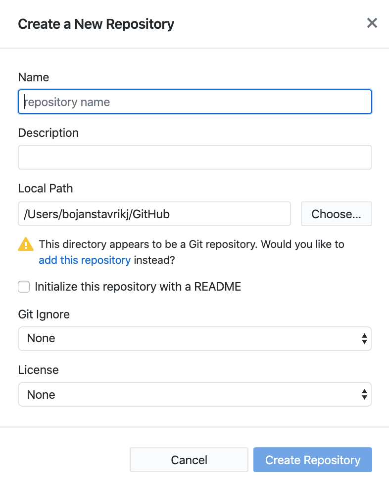
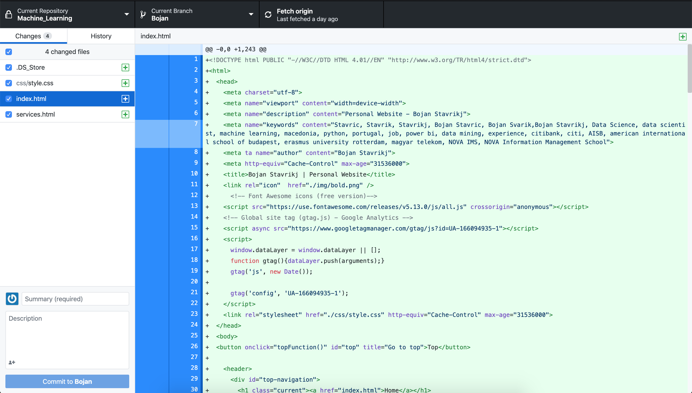

How to host your HTML webpage for free?


The easiest way to spread your ideas is to put them up on the internet. In order to put your ideas on the internet you either need a user profile on an existing platform or better yet - creating your own.
A website is nothing more than files that are loaded (by you) and downloaded (by others) through the internet using a browser. One of the components of a website is the skeleton or html script where you structure your site, and input the content you want to display. While the second component of a website is the styling or css file, which makes sure your content looks good. Once you have the main components, it is time to make them go live.
In order to do this, we need to get familiarized with the term web hosting. Website hosting is what allows your website to go online. There are providers or servers where your files are kept and made available on the world wide web. Once your files are on a server for web hosting, all someone has to do is search your webpage's domain and they will be able to view its content on their browsers.
Most of the times you have to pay for hosting a webpage, depending on what provider you turn to. Although, there is one (at least that I know of) that offers web hosting free - Github Pages. I will only explain how to get your page online, if you want to learn more about Github Pages follow this link.
The first step of the process is downloading the Github's desktop application. It is not necessary to do it through the desktop app, but it will make your life easier later on when you update your content locally and want to make it go live. To download the desktop version follow one of these links:
Now that you are in Github, create a new repository and the following pop-up window will show up:
In name put your_username.github.io. where you replace your_username with your own Github username. For my case, my username is bojanstavrikj, so the repository name is going to be bojanstavrikj.github.io. It is very important to use this format as your repository name, otherwise it's not going to work. The Local Path option is where your repository will be cloned on your machine (it is advisable that it's easily accessible). Note, this is not the path where your files currently reside, but Github needs to create this empty folder as the new home for the files of the repository. Leave the rest of the fields to their default option and click Create Repository.
Now that your repository is created, all you need to do is move your html, css and other files (images, icons, javascript...) to the newly created repository (located where you set your local path in the previous step). Another very important note, your homepage html file needs to be named "index.html" !!!
Once you have moved the files to the repository's path your Github app should look something like this:
Under the changed files section you should have all your necessary files for your page to run. Double check that you can see all of them, write a summary in the summary box (this is required in order to commit them Github). And lastly click the button Commit to master in the bottom left of the app window.
It usually doesn't take too much time to make it go online. Wait for some 15-20 minutes and search your_username.github.io in your browser, your website should be there.
I hope this helped you. If you have any questions or suggestions, please don't hesitate to contact me below.